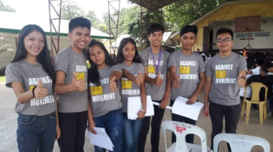
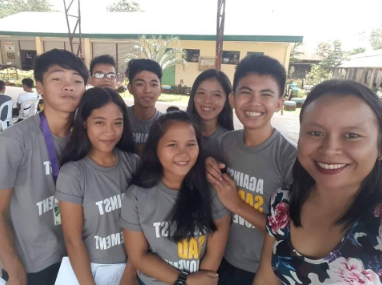

Barkada Kontra Droga
Blood Letting
The Blood Letting event was held at Britanico Hall in Miag-ao, Iloilo, with Lawigan National High School (LNHS) sending 10 participants, 7 of whom successfully donated blood.
The event was part of DAPC Week 20, an initiative aimed at raising awareness about the dangers of substance abuse and promoting a drug-free community. Organized by the Barkada Kontra Droga Organization under the National Drug Education Program (NDEP), DAPC Week featured various activities and campaigns designed to educate students on the effects of drugs and the value of making informed decisions.
Throughout the week, activities such as the Pledge of Commitment to a Drug-Free Community and Room-to-Room Campaigns encouraged students to learn, engage, and take a stand against substance abuse. The goal was to foster understanding, provide guidance, and create a supportive environment where students feel empowered to resist peer pressure and make healthy choices.
BKD Camp
The BKD Camp 20 successfully concluded at Janiuay National High School with 27 students and 4 teachers serving as coaches and chairpersons. Gratitude is extended to Janiuay NCHS for hosting the event and to all participants for making it a success.
Community Clean-Up Drive
The Community Clean-up Drive Activity took place on December 29, 20--, in the vicinity of Barangay V, Bantay, Ilocos Sur. This event was organized to support the Solid Waste Management program initiated by Barangay Lawigan, aiming to maintain a clean and healthy environment.
Participants included Barangay officials, employees, 4P's members, as well as BKD officers and members. Together, they worked to clean the community, demonstrating collective effort and commitment to environmental sustainability.
Gift Giving
On November 7, 2024, officers from Barkasa Konrta Droga (BKD), along with members of the Supreme Secondary Learner Government (SSLG), Youth for Environment in Schools Organisation (YES-O), and Humanities and Social Sciences (HUMSS) students, held a gift-giving and feeding program for senior citizens at Barangay Sta. Lucia Young in Zaragoza, Nueva Ecija. The event, called "Project Share," brought joy to the elderly, who enjoyed a warm meal and received simple gifts from the students. The program aimed to show care and support for the elderly in the community. Brgy. Captain Hon. Eduardo Calderon supported the event and thanked the youth for their involvement. The organizers expressed how important it was to reach out to senior citizens and make them feel valued. Through Project Share, the students learned the value of kindness and giving back, creating a positive experience for the senior citizens of Zaragoza.
Huwarang Barkada
Original Text:
"Huwarang Paglilingkod"
By: Charles Loyd Casaquite
Kapag ikaw ay nangangailangan ng paghilom,
Sila ang takbohan sa pagtikom
Sa mga sugat at mga nararamdaman
Mga kamay nila ang iyong kaagapay upang ang sakit ay maibsan.
Palaging nakasout ng mga puting roba
Sa tindig at postura ay naiiba
Kung iyong titigan sila,
Ang pagkakamali ang kinatatakutan nila.
Ano mang delobyo o sakuna ang dumating
Lahat ay gagawin at hahamakin
Upang ang kaligtasan mo ay maiparating
Isusugal nila ang lahat higit pa sa kanilang tungkulin.
Mga taong higit pa sa serbisyo ang ginagampanan
Matulungan lang ang nangangailangan
Ibinuwis ang buhay sa abot ng makakaya
Mapa abot lng ang serbisyong tunay pa sa ginto ang halaga.
Kaya tayong mga mamamayan at kabataan
Sa simpleng pagsunod sa ating mga natatanging bayani
Ay magdadala sa atin sa kaginhawaan
Na matagal na nating inaasam.
#BKDKPSEPSOLIDARITY
#BKDKPSEPthankyouFRONTLINERS
#BKDKPSEPallthroughtheway
#LAMBUNAOBKD
#LAMBUNAOKPSEP
Red Ribbon Campaign
The Red Ribbon Campaign is an initiative by the Barkada Kontra Droga Officers to promote awareness during Drug Abuse and Control Week. From November 13-17, everyone is encouraged to wear red ribbons as a symbol of zero tolerance for illegal drug use and a commitment to substance abuse prevention. This campaign reflects a collective effort to advocate for a drug-free youth and society.
All BKD Officers (NHS)
President: LOYD VINCENT GONDAO
VICE- PRESIDENT: KIAN SEGOVIA
SECRETARY: JELLE GRACE ANSELMO
ASST. SECRETARY: CLIDE MANANGKILA
TREASURER: ERICK GALAMITON
AUDITOR: CHARLES PATRICK OROLA
P.I.O: LAIROSE RODICOL AND AUBREY ALVARADO
SOCIAL MANAGERS: PETER MAGUITE AND CYNEL ROSE FERNANDEZ
SGT. AT ARMS: GLENDELOU BUENO AND LUIJE TALJA
REPRESENTATIVES
NIKOLAY PERALTA
LORRAINE RODICOL
PETER ANGELO PLAZOS
CHERRY MAE ORALDE
ROEL ELECCION
ZENAIDA OCON
ZIAH KRISTIN TIROL
DEXTER JHON BUENO
PALM CHELIE DELA CERNA
ANNA ROSE SAYON
JEAN PITOGO
ANDREA MONIC PACA
CHARLES DAVE LAPE
SANDRIEL TUNASAN
GLEN BASAHAN
JESSA MAE MARFIL
JERICO GAVIOLA
RHEN JAY LOGRONIO
ELLIZA JULE DILAO
SHAIRA JOY EMPUERTO
MARY GRACE RABAGO
JHON MARK UDTOHAN
CRIZZO LIGHT ORDANIEL
LOVELY AGUITAS
SHARLOT RICHA
KENT JASTINE AGTANG
JESSA MORALES
RUBELYN SANCHEZ
CRISTINE JOY RETES
KASEY JOY TOBLE
S.A.D.


Barkada Kontra Droga Implementation of "Against SAD Movement" Say no to Smoking, Alcohol & Drugs.